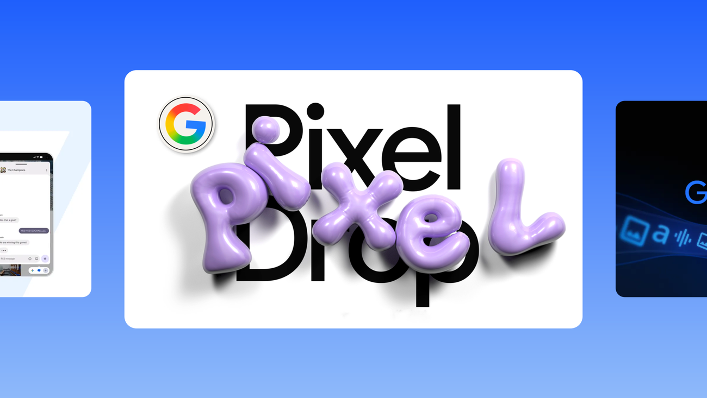

Google 6월 AI 업데이트: Gemini 이미지·비디오 워크플로우가 더 빠르고 저렴한 방향으로

Google은 6월 AI 업데이트에서 더 빠르고 비용 효율적인 Gemini Image 모델과 Gemini Omni Flash API 공개 프리뷰를 강조했습니다. 텍스트로 3~10초 영상을 만들고, 정지 이미지를 애니메이션화한 뒤 대화식으로 수정하는 흐름이 핵심입니다.
인사이트: 수업에서는 ‘스토리보드 한 장→3초 영상→대화형 수정’ 과제를 만들기 좋고, 디자인팀은 짧은 콘셉트 검증 영상을 빠르게 뽑는 용도로 살펴볼 수 있습니다.